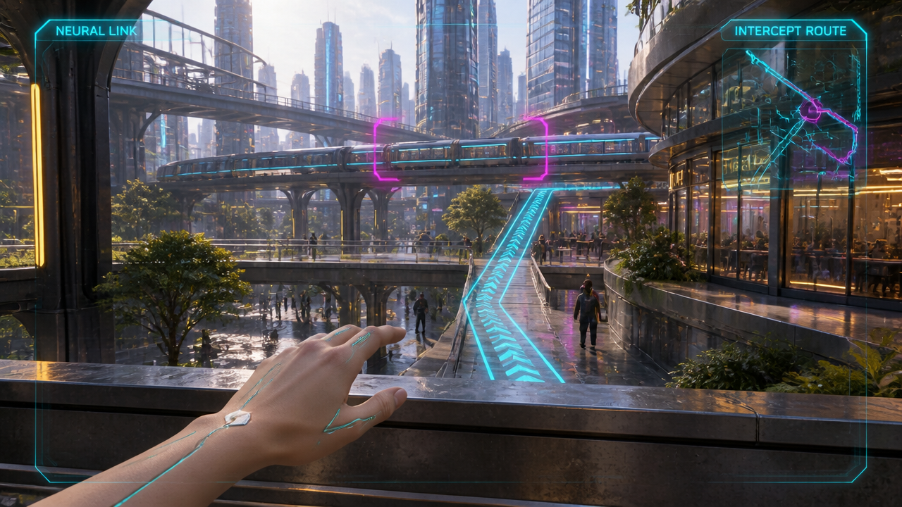
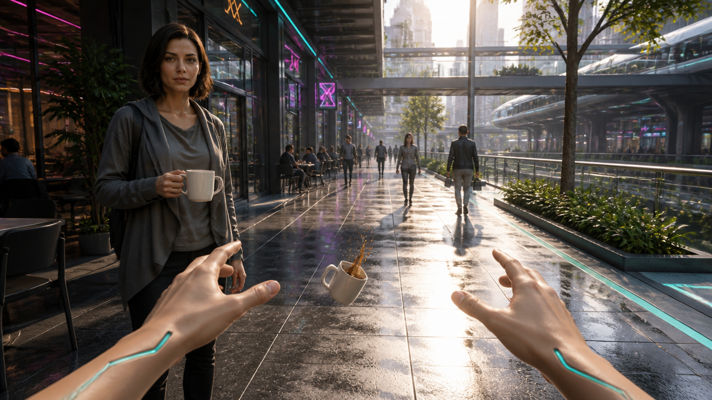
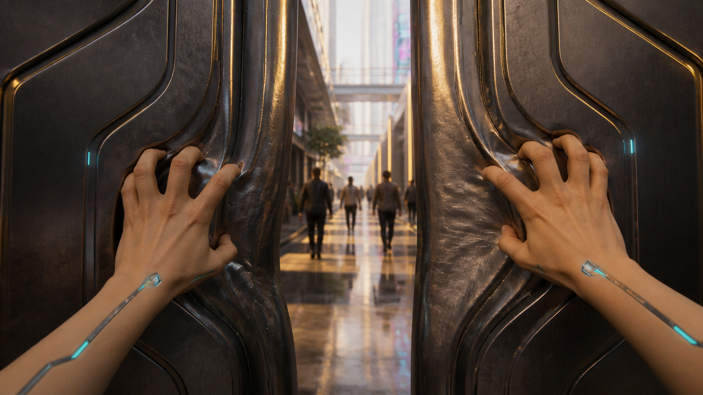
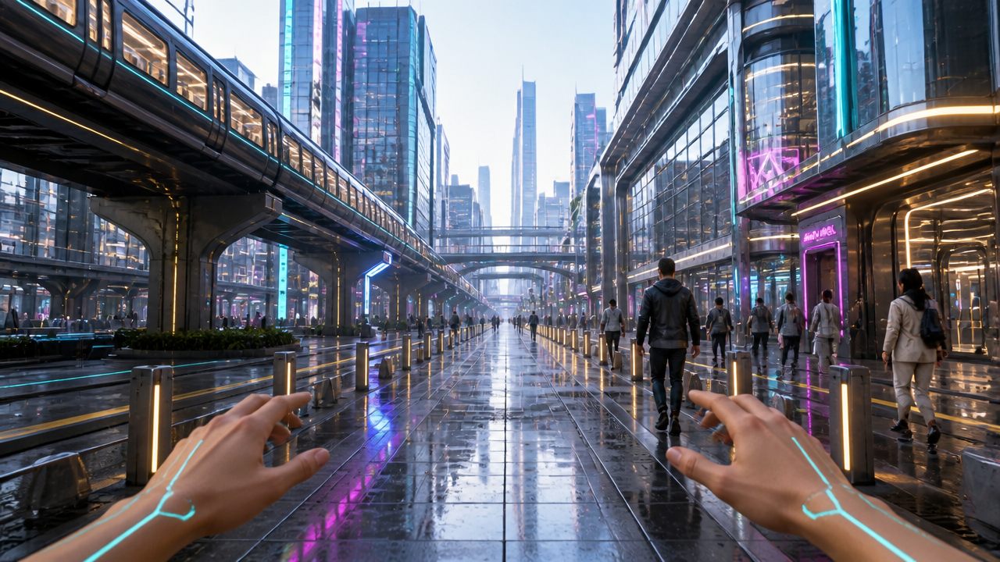
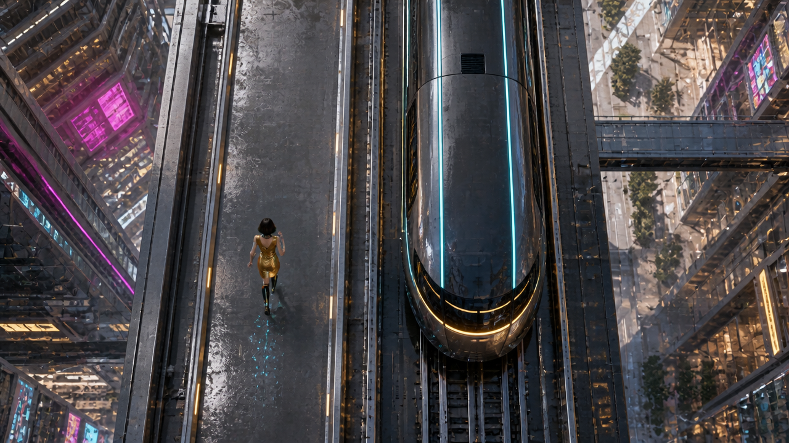

08 — Intelligence / city terrace HUD
Raised terrace in the station district

Visible NEURAL LINK and INTERCEPT ROUTE HUD, rail target bracket and cyan pedestrian route. Terrace, skyline, elevated train, glass/metal and gold/cyan/magenta lighting now match the station district. First-person skin hand with narrow chrome accents.
What still needs testing
- HUD is baked into this concept still; final clean plate and tracked graphic layers need planning before motion.
- Static route graphic is a composition proposal, not a verified navigable path.
- Motion, hand cadence and optical HUD stability are untested.
09 — Reflexes / café arcade
Futuristic café arcade

Futuristic café arcade and elevated rail now belong to the shared city. First-person hands and a falling mug demonstrate the intended rescue moment.
What still needs testing
- Incorrect object count: stranger holds one mug while a second mug falls. Must correct before animation.
- Stranger resembles Riley; use a clearly distinct person in the correction.
- This is already mid-drop, not the requested pre-slip starting state. Hands are already reaching rather than jogging.
10 — Strength / transit bulkhead
Transit service passage

Two first-person skin hands with thin chrome inlays grip heavy dark metal doors. Gold and cyan lighting and visible city structures match the shared environment. Metal deformation reads clearly as strength.
What still needs testing
- Doors are already bent and the gap is wider than the requested nearly-closed starting state. Useful action/keyframe concept, not a clean before-state.
- Passage reads as an entrance to a populated arcade rather than a secluded transit service corridor.
- Further deformation and grip continuity remain motion tests.
11 — Speed / avenue under elevated rail
Avenue beneath elevated rail

Open central avenue with dense glass towers, skybridges, elevated train and consistent daylight palette. Close bollards and paving provide foreground references for future acceleration. First-person hands retain skin and cyan/chrome accents.
What still needs testing
- Static image cannot demonstrate speed; acceleration must come from actual foreground translation.
- Both hands are extended similarly rather than alternating in a sprint pose.
- Train travel direction is not established by this side-view still; motion prompt must preserve parallel travel.
12A — Train race / beginning
Elevated urban rail with separated running lane

City materials, separate left lane and gold wardrobe are present. Train is longitudinally aligned with rails.
What still needs testing
- Train nose points downward while Riley runs upward; the requested same-direction staging failed.
- Cannot use this as the animation start or matching-end authority.